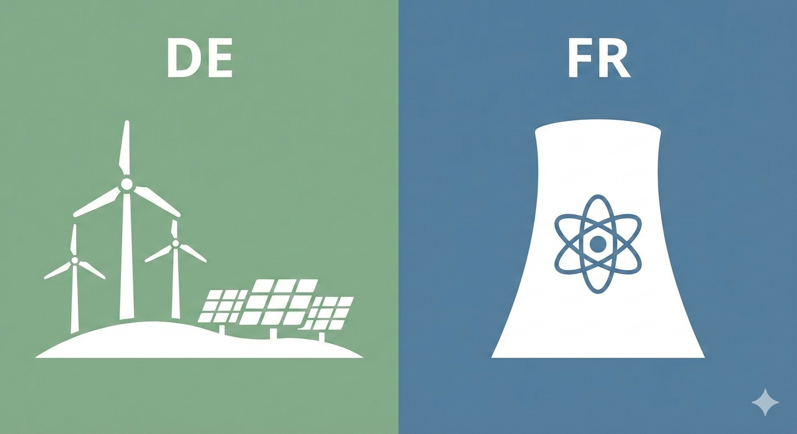
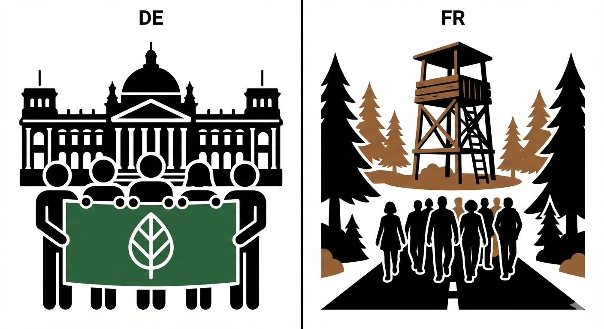
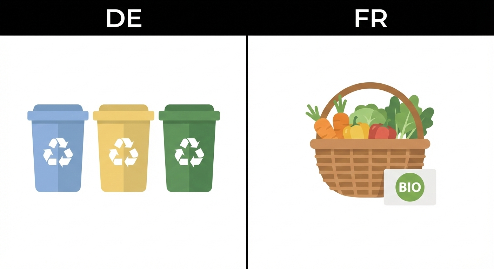

Simplified "disciplined vs. rebellious" categories avoid regional nuances.
Dominated by German/English perspectives, potentially missing French binnendiscourse.
Overemphasizes radical actions over systemic evolution.
Based on dfi, OFAJ, UBA, ADEME and Hofstede Insights.